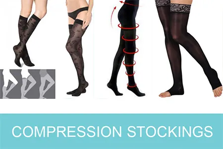

Why come to Victoria for veins
Victoria has taught sclerotherapy to doctors and registered nurses for more than ten years. Spider veins are the treatment her Google reviewers mention most. One client, after years of hiding her legs, wrote that she can’t believe she will wear dresses again.
What happens
- Wear loose clothing. The veins to treat are identified.
- Each vein is injected with a very fine needle. You’ll feel a small sting that burns for a few seconds; most people find it far less painful than expected. Numbing cream is available if you need it.
- Your compression stockings go on afterwards.
Sometimes a few sessions two weeks apart are needed. Winter is the ideal season, as stockings are easy to wear under clothes.
Compression stockings: the step that makes it work
Wearing thigh-high compression stockings is essential. They keep the walls of the treated vein pressed together so the body can break it down, speed healing, reduce the chance of pigmentation, and help protect against clotting by keeping blood moving. Without them, veins refill with blood and treatment is much less effective.
- Wear them for 24 hours on the first day, then for one week.
- The clinic professionally measures every client.
- A full line is available in-clinic: socks, pantyhose and thigh-highs in cotton, sheer and ultra-sheer, in many colours.
- Many employer benefit plans cover compression stockings; check with your insurer.
After treatment
- Walking soon after is encouraged. Avoid high-intensity sport for 5–7 days.
- Treated areas may look bruised or swollen for a few days; bruising usually clears in 10–14 days.
- Mild soreness is eased with Tylenol and by wearing your stockings.
- You will walk normally.
Who should not have sclerotherapy
Almost anyone with unwanted spider veins can be treated, except during pregnancy or breastfeeding. It may not be suitable with a skin infection, uncontrolled diabetes, fever, a history of deep vein thrombosis, corticosteroid use, or anticoagulant therapy; anyone on a blood thinner is not a candidate. Stop aspirin and ibuprofen (Advil, Motrin) a few days before. No other preparation is needed.
Gallery

I had my spider veins removed by Victoria. She did an amazing job! She is very skilled and attentive.
I can’t wait to wear shorts in the summer now that Victoria has cleared all my spider veins.
Sclerotherapy FAQ
How many sclerotherapy treatments will I need?
Typically three to five; milder cases often need two or three. More or larger veins need more sessions.
Does sclerotherapy hurt?
Each injection gives a small sting that lasts a few seconds. Most people don’t need anesthesia and find it much easier than they expected.
Can it treat large varicose veins?
Sclerotherapy is for small and medium veins near the surface. Large varicose veins need much more solution and a stronger formula, and are better assessed separately.
Can veins on the face or hands be treated?
No. Sclerotherapy should never be used on the hands, and facial veins respond better to light-based treatment such as Lumecca.
What do I need to do after?
Wear compression stockings (24 hours the first day, then for a week), walk as normal, and skip intense sport for 5–7 days.
This page is general information, not medical advice. Your suitability for any treatment is confirmed at a consultation with Victoria Adamov, RN.